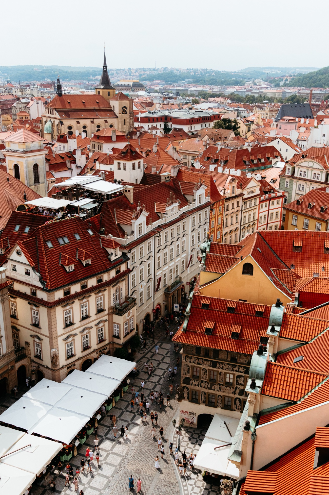
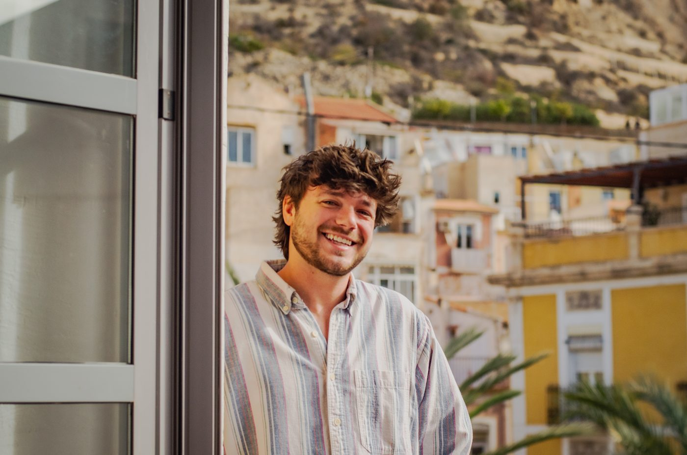

Phoenix, AZ
Portraits
Grad sessions from $175
40 to 60 edited photos
Original footage featured in
Coverage coordination and production support for CNN, NYT, and Business Insider

Fine art prints of cities, bikes, and transit from Prague to Tempe.

Background, experience, and press.